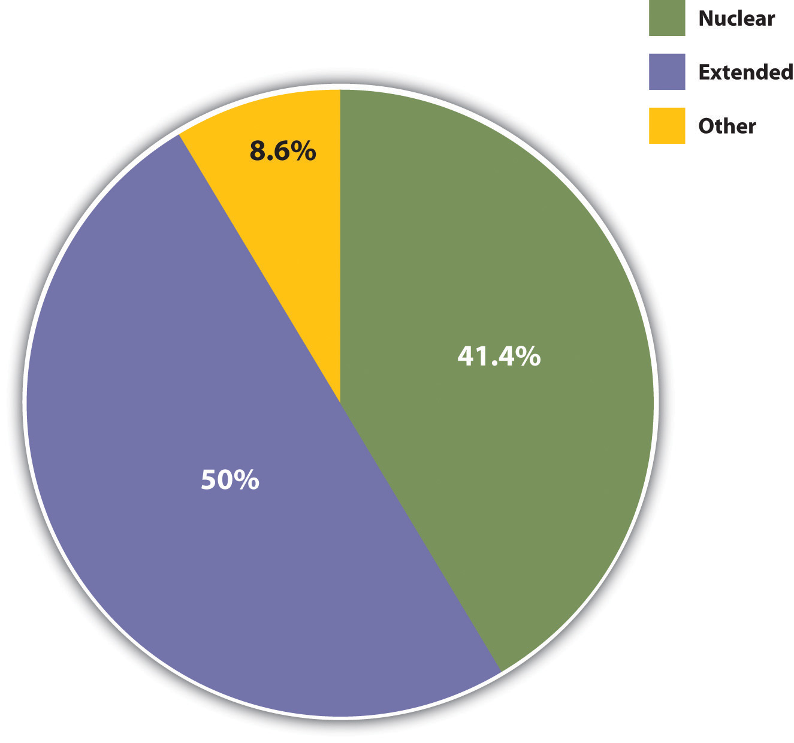
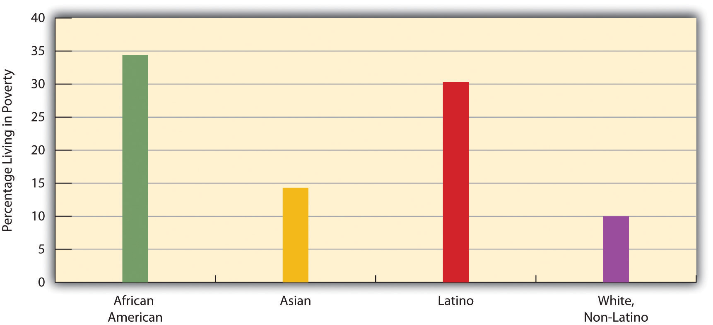

“Stabbing Conviction Upheld,” the headline said. In January 2010, the North Carolina Court of Appeals upheld the conviction of a man who had attempted to kill his wife in December 2007 by stabbing her repeatedly in the face and back with a butcher knife. The victim was on her way to deliver Christmas presents to her parents, but her husband attacked her because he thought she was having an affair. With a sentence of almost 21 years, the husband is due to be released from prison 3 days before Christmas in 2027. (Schulman, 2010)Schulman, M. (2010, January 7). Stabbing conviction upheld. Hendersonville [NC] Times-News. Retrieved from http://www.blueridgenow.com/article/20100107/SERVICES03/1071032
Once upon a time, domestic violence did not exist, or so the popular television shows of the 1950s would have had us believe. Neither did single-parent households, gay couples, interracial couples, mothers working outside the home, heterosexual spouses deciding not to have children, or other family forms and situations that are increasingly common today. Domestic violence existed, of course, but it was not something that television shows and other popular media back then depicted. The other family forms and situations also existed to some degree but have become much more common today.
The 1950s gave us Leave It to Beaver and other television shows that depicted loving, happy, “traditional” families living in the suburbs. The father worked outside the home, the mother stayed at home to take care of the kids and do housework, and their children were wholesome youngsters who rarely got into trouble and certainly did not use drugs or have sex. Today we have ABC’s Modern Family, which features one traditional family (two heterosexual parents and their three children) and two nontraditional families (one with an older white man and a younger Latina woman and her child, and another with two gay men and their adopted child). Many other television shows today and in recent decades have featured divorced couples or individuals, domestic violence, and teenagers doing drugs or committing crime.
In the real world, we hear that parents are too busy working at their jobs to raise their kids properly. We hear of domestic violence like the sad story from North Carolina described at the start of this chapter. We hear of kids living without fathers, because their parents either are divorced or never were married in the first place. We hear of young people having babies, using drugs, and committing violence. We hear that the breakdown of the nuclear family, the entrance of women into the labor force, and the growth of single-parent households are responsible for these problems. Some observers urge women to work only part time or not at all so they can spend more time with their children. Some yearn wistfully for a return to the 1950s, when everything seemed so much easier and better. Children had what they needed back then: one parent to earn the money, and another parent to take care of them full time until they started kindergarten, when this parent would be there for them when they came home from school.
Families have indeed changed, but this yearning for the 1950s falls into what historian Stephanie Coontz (2000)Coontz, S. (2000). The way we never were: American families and the nostalgia trap. New York, NY: Basic Books. once called the “nostalgia trap.” The 1950s television shows did depict what some families were like back then, but they failed to show what many other families were like. Moreover, the changes in families since that time have probably not had the harmful effects that many observers allege. Historical and cross-cultural evidence even suggests that the Leave It to Beaver–style family of the 1950s was a relatively recent and atypical phenomenon and that many other types of families can thrive just as well as the 1950s television families did.
This chapter expands on these points and looks at today’s families and the changes they have undergone. It also examines some of the controversies now surrounding families and relationships. We start with a cross-cultural and historical look at the family.
A familyA group of two or more people who are related by blood, marriage, adoption, or a mutual commitment and who care for one another. is a group of two or more people who are related by blood, marriage, adoption, or a mutual commitment and who care for one another. Defined in this way, the family is universal or nearly universal: some form of the family has existed in every society, or nearly every society, that we know about (Starbuck, 2010).Starbuck, G. H. (2010). Families in context (2nd ed.). Boulder, CO: Paradigm. Yet it is also true that many types of families have existed, and the cross-cultural and historical record indicates that these different forms of the family can all “work”: they provide practical and emotional support for their members and they socialize their children.
It is important to keep this last statement in mind, because Americans until recently thought of only one type of family when they thought of the family at all, and that is the nuclear familyA family composed of two parents and their children living in the same household.: a married heterosexual couple and their young children living by themselves under one roof. The nuclear family has existed in most societies with which scholars are familiar, and several of the other family types we will discuss stem from a nuclear family. Extended familiesA family in which parents, children, and other relatives live in the same household., for example, which consist of parents, their children, and other relatives, have a nuclear family at their core and were quite common in the preindustrial societies studied by George Murdock (Murdock & White, 1969)Murdock, G. P., & White, D. R. (1969). Standard cross-cultural sample. Ethnology, 8, 329–369. that make up the Standard Cross-Cultural Sample (see Figure 15.1 "Types of Families in Preindustrial Societies").
Figure 15.1 Types of Families in Preindustrial Societies
The nuclear family that was so popular on television shows during the 1950s remains common today but is certainly less common than during that decade.
Source: Data from Standard Cross-Cultural Sample.
Similarly, many one-parent families begin as (two-parent) nuclear families that dissolve upon divorce/separation or, more rarely, the death of one of the parents. In recent decades, one-parent families have become more common in the United States because of divorce and births out of wedlock, but they were actually very common throughout most of human history because many spouses died early in life and because many babies were born out of wedlock. We return to this theme shortly.
When Americans think of the family, they also think of a monogamous family. Monogamy refers to a marriage in which one man and one woman are married only to each other. That is certainly the most common type of marriage in the United States and other Western societies, but in some societies polygamy—the marriage of one person to two or more people at a time—is more common. In the societies where polygamy has prevailed, it has been much more common for one man to have many wives (polygyny) than for one woman to have many husbands (polyandry).
The selection of spouses also differs across societies but also to some degree within societies. The United States and many other societies primarily practice endogamyMarriage within a social category or group, including race, ethnicity, social class, and religion., in which marriage occurs within one’s own social category or social group: people marry others of the same race, same religion, same social class, and so forth. Endogamy helps reinforce the social status of the two people marrying and to pass it on to any children they may have. Consciously or not, people tend to select spouses and mates (boyfriends or girlfriends) who resemble them not only in race, social class, and other aspects of their social backgrounds but also in appearance. As Chapter 1 "Sociology and the Sociological Perspective" pointed out, attractive people marry attractive people, ordinary-looking people marry ordinary-looking people, and those of us in between marry other in-betweeners. This tendency to choose and marry mates who resemble us in all of these ways is called homogamy.
Some societies and individuals within societies practice exogamyMarriage between social categories or groups., in which marriage occurs across social categories or social groups. Historically exogamy has helped strengthen alliances among villages or even whole nations, when we think of the royalty of Europe, but it can also lead to difficulties. Sometimes these difficulties are humorous, and some of filmdom’s best romantic comedies involve romances between people of very different backgrounds. As Shakespeare’s great tragedy Romeo and Juliet reminds us, however, sometimes exogamous romances and marriages can provoke hostility among friends and relatives of the couple and even among complete strangers. Racial intermarriages, for example, are exogamous marriages, and in the United States they often continue to evoke strong feelings and were even illegal in some states until a 1967 Supreme Court decision (Loving v. Virginia, 388 U.S. 1) overturned laws prohibiting them.
Families also differ in how they trace their descent and in how children inherit wealth from their parents. Bilateral descent prevails in the United States and many other Western societies: we consider ourselves related to people on both parents’ sides of the family, and our parents pass along their wealth, meager or ample, to their children. In some societies, though, descent and inheritance are patrilinealInheritance through the male line. (children are thought to be related only to their father’s relatives, and wealth is passed down only to sons), while in others they are matrilinealInheritance through the female line. (children are thought to be related only to their mother’s relatives, and wealth is passed down only to daughters).
Another way in which families differ is in their patterns of authority. In patriarchal familiesA family where the husband and father holds the main authority in the household., fathers are the major authority figure in the family (just as in patriarchal societies men have power over women; see Chapter 11 "Gender and Gender Inequality"). Patriarchal families and societies have been very common. In matriarchal familiesA family where the wife and mother holds the main authority in the household., mothers are the family’s major authority figure. Although this type of family exists on an individual basis, no known society has had matriarchal families as its primary family type. In egalitarian familiesA family where both spouses share authority equally., fathers and mothers share authority equally. Although this type of family has become more common in the United States and other Western societies, patriarchal families are still more common.
Now that we are familiar with the basic types of family structures and patterns, let’s take a quick look at the cross-cultural and historical development of the family. We will start with the family in preindustrial times, drawing on research by anthropologists and other scholars, and then move on to the development of the family in Western societies.
People in hunting-and-gathering societies probably lived in small groups composed of two or three nuclear families. These groupings helped ensure that enough food would be found for everyone to eat. While men tended to hunt and women tended to gather food and take care of the children, both sexes’ activities were considered fairly equally important for a family’s survival. In horticultural and pastoral societies, food was more abundant, and families’ wealth depended on the size of their herds. Because men were more involved than women in herding, they acquired more authority in the family, and the family became more patriarchal than previously (Quale, 1992).Quale, G. R. (1992). Families in context: A world history of population. New York, NY: Greenwood Press. Still, as Chapter 13 "Work and the Economy" indicated, the family continued to be the primary economic unit of society until industrialization.
Although many preindustrial societies featured nuclear families, a few societies studied by anthropologists have not had them. One of these was the Nayar in southwestern India, who lacked marriage and the nuclear family. A woman would have several sexual partners during her lifetime, but any man with whom she had children had no responsibilities toward them. Despite the absence of a father, this type of family arrangement seems to have worked well for the Nayar (Fuller, 1976).Fuller, C. J. (1976). The Nayars today. Cambridge, England: Cambridge University Press. Nuclear families are also mostly absent among many people in the West Indies. When a woman and man have a child, the mother takes care of the child almost entirely; the father provides for the household but usually lives elsewhere. As with the Nayar, this fatherless arrangement seems to have worked well in the parts of the West Indies where it is practiced (Smith, 1996).Smith, R. T. (1996). The matrifocal family: Power, pluralism and politics. New York, NY: Routledge.
A more contemporary setting in which the nuclear family is largely absent is the Israeli kibbutz, a cooperative agricultural community where all property is collectively owned. In the early years of the kibbutzim (plural of kibbutz), married couples worked for the whole kibbutz and not just for themselves. Kibbutz members would eat together and not as separate families. Children lived in dormitories from infancy on and were raised by nurses and teachers, although they were able to spend a fair amount of time with their birth parents. The children in a particular kibbutz grew up thinking of each other as siblings and thus tended to fall in love with people from outside the kibbutz (Garber-Talmon, 1972).Garber-Talmon, Y. (1972). Family and community in the kibbutz. Cambridge, MA: Harvard University Press. Although the traditional family has assumed more importance in kibbutz life in recent years, extended families continue to be very important, with different generations of a particular family having daily contact (Lavee, Katz, & Ben-Dror, 2004).Lavee, Y., Katz, R., & Ben-Dror, T. (2004). Parent-child relationships in childhood and adulthood and their effect on marital quality: A comparison of children who remained in close proximity to their parents and those who moved away. Marriage & Family Review, 36(3/4), 95–113.
These examples do not invalidate the fact that nuclear families are almost universal and important for several reasons we explore shortly. But they do indicate that the functions of the nuclear family can be achieved through other family arrangements. If that is true, perhaps the oft-cited concern over the “breakdown” of the 1950s-style nuclear family in modern America is at least somewhat undeserved. As indicated by the examples just given, children can and do thrive without two parents. To say this is meant neither to extol divorce, births out of wedlock, and fatherless families nor to minimize the problems they may involve. Rather, it is meant simply to indicate that the nuclear family is not the only viable form of family organization (Eshleman & Bulcroft, 2010).Eshleman, J. R., & Bulcroft, R. A. (2010). The family (12th ed.). Boston, MA: Allyn & Bacon.
In fact, although nuclear families remain the norm in most societies, in practice they are something of a historical rarity: many spouses used to die by their mid-40s, and many babies were born out of wedlock. In medieval Europe, for example, people died early from disease, malnutrition, and other problems. One consequence of early mortality was that many children could expect to outlive at least one of their parents and thus essentially were raised in one-parent families or in stepfamilies (Gottlieb, 1993).Gottlieb, B. (1993). The family in the Western world from the Black Death to the industrial age. New York, NY: Oxford University Press.
Moving quite a bit forward in history, different family types abounded in the colonial period in what later became the United States, and the nuclear family was by no means the only type. Nomadic Native American groups had relatively small nuclear families, while nonnomadic groups had larger extended families; in either type of society, though, “a much larger network of marital alliances and kin obligations [meant that]…no single family was forced to go it alone” (Coontz, 1995, p. 11).Coontz, S. (1995, Summer). The way we weren’t: The myth and reality of the “traditional” family. National Forum: The Phi Kappa Phi Journal, 11–14. Nuclear families among African Americans slaves were very difficult to achieve, and slaves adapted by developing extended families, adopting orphans, and taking in other people not related by blood or marriage. Many European parents of colonial children died because average life expectancy was only 45 years. The one-third to one-half of children who outlived at least one of their parents lived in stepfamilies or with just their surviving parent. Mothers were so busy working the land and doing other tasks that they devoted relatively little time to child care, which instead was entrusted to older children or servants.
During industrialization, people began to move into cities to be near factories. A new division of labor emerged in many families: men worked in factories and elsewhere outside the home, while many women stayed at home to take care of children and do housework, including the production of clothing, bread, and other necessities, for which they were paid nothing (Gottlieb, 1993).Gottlieb, B. (1993). The family in the Western world from the Black Death to the industrial age. New York, NY: Oxford University Press. For this reason, men’s incomes increased their patriarchal hold over their families. In some families, however, women continued to work outside the home. Economic necessity dictated this: because families now had to buy much of their food and other products instead of producing them themselves, the standard of living actually declined for many families.
But even when women did work outside the home, men out-earned them because of discriminatory pay scales and brought more money into the family, again reinforcing their patriarchal hold. Over time, moreover, work outside the home came to be seen primarily as men’s work, and keeping house and raising children came to be seen primarily as women’s work. As Coontz (1997, pp. 55–56)Coontz, S. (1997). The way we really are: Coming to terms with America’s changing families. New York, NY: Basic Books. summarizes this development,
The resulting identification of masculinity with economic activities and femininity with nurturing care, now often seen as the “natural” way of organizing the nuclear family, was in fact a historical product of this 19th-century transition from an agricultural household economy to an industrial wage economy.
This marital division of labor began to change during the early 20th century. Many women entered the workforce in the 1920s because of a growing number of office jobs, and the Great Depression of the 1930s led even more women to work outside the home. During the 1940s, a shortage of men in shipyards, factories, and other workplaces because of World War II led to a national call for women to join the labor force to support the war effort and the national economy. They did so in large numbers, and many continued to work after the war ended. But as men came home from Europe and Japan, books, magazines, and newspapers exhorted women to have babies, and babies they did have: people got married at younger ages and the birth rate soared, resulting in the now famous baby boom generation. Meanwhile, divorce rates dropped. The national economy thrived as auto and other factory jobs multiplied, and many families for the first time could dream of owning their own homes. Suburbs sprang up, and many families moved to them. Many families during the 1950s did indeed fit the Leave It to Beaver model of the breadwinner-homemaker suburban nuclear family. Following the Depression of the 1930s and the war of the 1940s, the 1950s seemed an almost idyllic decade.

The Women in Military Service for America Memorial at the Arlington National Cemetery honors the service of women in the U.S. military. During World War II, many women served in the military, and many other women joined the labor force to support the war effort and the national economy.
Source: Photo courtesy of Rudi Williams, U.S. Department of Defense, http://www.defense.gov/news/newsarticle.aspx?id=45081.
Even so, less than 60% of American children during the 1950s lived in breadwinner-homemaker nuclear families. Moreover, many lived in poverty, as the poverty rate then was almost twice as high as it is today. Teenage pregnancy rates were about twice as high as today, even if most pregnant teens were already married or decided to get married because of the pregnancy. Although not publicized back then, alcoholism and violence in families were common. Historians have found that many women in this era were unhappy with their homemaker roles, Mrs. Cleaver (Beaver’s mother) to the contrary, suffering from what Betty Friedan (1963)Friedan, B. (1963). The feminine mystique. New York, NY: W. W. Norton. famously called the “feminine mystique.”
In the 1970s, the economy finally worsened. Home prices and college tuition soared much faster than family incomes, and women began to enter the labor force as much out of economic necessity as out of simple desire for fulfillment. As Chapter 13 "Work and the Economy" noted, more than 60% of married women with children under 6 years of age are now in the labor force, compared to less than 19% in 1960. Working mothers are no longer a rarity.
In sum, the cross-cultural and historical record shows that many types of families and family arrangements have existed. Two themes relevant to contemporary life emerge from our review of this record. First, although nuclear families and extended families with a nuclear core have dominated social life, many children throughout history have not lived in nuclear families because of the death of a parent, divorce, or birth out of wedlock. The few societies that have not featured nuclear families seem to have succeeded in socializing their children and in accomplishing the other functions that nuclear families serve. In the United States, the nuclear family has historically been the norm, but, again, many children have been raised in stepfamilies or by one parent.
Second, the nuclear family model popularized in the 1950s, in which the male was the breadwinner and the female the homemaker, must be considered a blip in U.S. history rather than a long-term model. At least up to the beginning of industrialization and, for many families, after industrialization, women as well as men worked to sustain the family. Breadwinner-homemaker families did increase during the 1950s and have decreased since, but their appearance during that decade was more of a historical aberration than a historical norm. As Coontz (1995, p. 11)Coontz, S. (1995, Summer). The way we weren’t: The myth and reality of the “traditional” family. National Forum: The Phi Kappa Phi Journal, 11–14. summarized the U.S. historical record, “American families always have been diverse, and the male breadwinner-female homemaker, nuclear ideal that most people associate with ‘the’ traditional family has predominated for only a small portion of our history.” Commenting specifically on the 1950s, sociologist Arlene Skolnick (1991, pp. 51–52)Skolnick, A. (1991). Embattled paradise: The American family in an age of uncertainty. New York, NY: Basic Books. similarly observed, “Far from being the last era of family normality from which current trends are a deviation, it is the family patterns of the 1950s that are deviant.”
Sociological views on today’s families generally fall into the functional, conflict, and social interactionist approaches introduced earlier in this book. Let’s review these views, which are summarized in Table 15.1 "Theory Snapshot".
Table 15.1 Theory Snapshot
| Theoretical perspective | Major assumptions |
|---|---|
| Functionalism | The family performs several essential functions for society. It socializes children, it provides emotional and practical support for its members, it helps regulate sexual activity and sexual reproduction, and it provides its members with a social identity. In addition, sudden or far-reaching changes in the family’s structure or processes threaten its stability and weaken society. |
| Conflict | The family contributes to social inequality by reinforcing economic inequality and by reinforcing patriarchy. The family can also be a source of conflict, including physical violence and emotional cruelty, for its own members. |
| Symbolic interactionism | The interaction of family members and intimate couples involves shared understandings of their situations. Wives and husbands have different styles of communication, and social class affects the expectations that spouses have of their marriages and of each other. Romantic love is the common basis for American marriages and dating relationships, but it is much less common in several other contemporary nations. |
Recall that the functional perspective emphasizes that social institutions perform several important functions to help preserve social stability and otherwise keep a society working. A functional understanding of the family thus stresses the ways in which the family as a social institution helps make society possible. As such, the family performs several important functions.
First, the family is the primary unit for socializing children. As previous chapters indicated, no society is possible without adequate socialization of its young. In most societies, the family is the major unit in which socialization happens. Parents, siblings, and, if the family is extended rather than nuclear, other relatives all help socialize children from the time they are born.
Second, the family is ideally a major source of practical and emotional support for its members. It provides them food, clothing, shelter, and other essentials, and it also provides them love, comfort, help in times of emotional distress, and other types of intangible support that we all need.
Third, the family helps regulate sexual activity and sexual reproduction. All societies have norms governing with whom and how often a person should have sex. The family is the major unit for teaching these norms and the major unit through which sexual reproduction occurs. One reason for this is to ensure that infants have adequate emotional and practical care when they are born. The incest taboo that most societies have, which prohibits sex between certain relatives, helps minimize conflict within the family if sex occurred among its members and to establish social ties among different families and thus among society as a whole.
Fourth, the family provides its members with a social identity. Children are born into their parents’ social class, race and ethnicity, religion, and so forth. As we have seen in earlier chapters, social identity is important for our life chances. Some children have advantages throughout life because of the social identity they acquire from their parents, while others face many obstacles because the social class or race/ethnicity into which they are born is at the bottom of the social hierarchy.
Beyond discussing the family’s functions, the functional perspective on the family maintains that sudden or far-reaching changes in conventional family structure and processes threaten the family’s stability and thus that of society. For example, most sociology and marriage-and-family textbooks during the 1950s maintained that the male breadwinner–female homemaker nuclear family was the best arrangement for children, as it provided for a family’s economic and child-rearing needs. Any shift in this arrangement, they warned, would harm children and by extension the family as a social institution and even society itself. Textbooks no longer contain this warning, but many conservative observers continue to worry about the impact on children of working mothers and one-parent families. We return to their concerns shortly.
Conflict theorists agree that the family serves the important functions just listed, but they also point to problems within the family that the functional perspective minimizes or overlooks altogether.
First, the family as a social institution contributes to social inequality in several ways. The social identity it gives to its children does affect their life chances, but it also reinforces a society’s system of stratification. Because families pass along their wealth to their children, and because families differ greatly in the amount of wealth they have, the family helps reinforce existing inequality. As it developed through the centuries, and especially during industrialization, the family also became more and more of a patriarchal unit (see earlier discussion), helping to ensure men’s status at the top of the social hierarchy.
Second, the family can also be a source of conflict for its own members. Although the functional perspective assumes the family provides its members emotional comfort and support, many families do just the opposite and are far from the harmonious, happy groups depicted in the 1950s television shows. Instead, and as the news story that began this chapter tragically illustrated, they argue, shout, and use emotional cruelty and physical violence. We return to family violence later in this chapter.
Social interactionist perspectives on the family examine how family members and intimate couples interact on a daily basis and arrive at shared understandings of their situations. Studies grounded in social interactionism give us a keen understanding of how and why families operate the way they do.
Some studies, for example, focus on how husbands and wives communicate and the degree to which they communicate successfully (Tannen, 2001).Tannen, D. (2001). You just don’t understand: Women and men in conversation. New York, NY: Quill. A classic study by Mirra Komarovsky (1964)Komarovsky, M. (1964). Blue-collar marriage. New York, NY: Random House. found that wives in blue-collar marriages liked to talk with their husbands about problems they were having, while husbands tended to be quiet when problems occurred. Such gender differences seem less common in middle-class families, where men are better educated and more emotionally expressive than their working-class counterparts. Another classic study by Lillian Rubin (1976)Rubin, L. B. (1976). Worlds of pain: Life in the working-class family. New York, NY: Basic Books. found that wives in middle-class families say that ideal husbands are ones who communicate well and share their feelings, while wives in working-class families are more apt to say that ideal husbands are ones who do not drink too much and who go to work every day.
Other studies explore the role played by romantic love in courtship and marriage. Romantic love, the feeling of deep emotional and sexual passion for someone, is the basis for many American marriages and dating relationships, but it is actually uncommon in many parts of the contemporary world today and in many of the societies anthropologists and historians have studied. In these societies, marriages are arranged by parents and other kin for economic reasons or to build alliances, and young people are simply expected to marry whoever is chosen for them. This is the situation today in parts of India, Pakistan, and other developing nations and was the norm for much of the Western world until the late 18th and early 19th centuries (Lystra, 1989).Lystra, K. (1989). Searching the heart: Women, men, and romantic love in nineteenth-century America. New York, NY: Oxford University Press.
It is time now to take a closer look at families in the United States today. Using U.S. census data (U.S. Census Bureau, 2010),U.S. Census Bureau. (2010). Statistical abstract of the United States: 2010. Washington, DC: U.S. Government Printing Office. Retrieved from http://www.census.gov/compendia/statab we first sketch the major types of family arrangements that now exist.
The census defines a household as being all the people who live together in a dwelling unit, whether or not they are related by blood, marriage, or adoption. About 117 million households exist in the United States. Of this number, about 67% are family households and 33% are nonfamily households. Most of the nonfamily households consist of only one person. About half of all households involve a married couple, and half do not involve a married couple.
This last figure should not suggest that marriage is unimportant. Only 26% of all adults (18 or older) have never been married, about 57% are currently married, 10% are divorced, and 6% are widowed (see Figure 15.2 "Marital Status of the U.S. Population, 2008, Persons 18 Years of Age or Older"). Because more than half of the never-married people are under 30, it is fair to say that many of them will be getting married sometime in the future. When we look just at people aged 45–54, about 88% are currently married or had been married at some point in their lives. These figures all indicate that marriage remains an important ideal in American life, even if not all marriages succeed.
Figure 15.2 Marital Status of the U.S. Population, 2008, Persons 18 Years of Age or Older
Source: Data from U.S. Census Bureau. (2010). Statistical abstract of the United States: 2010. Washington, DC: U.S. Government Printing Office. Retrieved from http://www.census.gov/compendia/statab.
Most marriages (96.1%) are intraracial, or between people of the same race, with only 3.9% of marriages between people of different races. As small as it is, this figure is 3 times greater than the 1.3% of marriages in 1980 that were interracial. Moreover, almost 15% of new marriages in 2008 were interracial. This increase (Chen, 2010)Chen, S. (2010, June 4). Interracial marriages at an all-time high, study says. CNN. Retrieved from http://articles.cnn.com/2010-06-04/living/pew.interracial.marriage_1_ interracial-marriages-millennial-generation-race-and-ethnicity-matter?_s=PM:LIVING is reflected in dating patterns, as more than half of African American, Latino, and Asian adults have dated someone from a different racial/ethnic group (Qian, 2005).Qian, Z. (2005). Breaking the last taboo: Interracial marriage in America. Contexts, 4(4), 33–37. More than half of married Asians and Native Americans are in an interracial marriage, compared to about 40% of Latinos, 10% of African Americans, and 4% of whites. These percentages heavily reflect the numbers of people in these groups, because mathematically it is easiest to end up in an interracial relationship and marriage if there are relatively few people in one’s own racial/ethnic group. Because there are so many whites compared to the other groups, more than 90% of all interracial marriages have a white spouse.
It is interesting to see how the age at which people first get married has changed. Figure 15.3 "Median Age at First Marriage for Men and Women, 1890–2009" shows that age at first marriage declined gradually during the first half of the 20th century, before dropping more sharply between 1940 and 1950 because of World War II. It then rose after 1970 and today stands at almost 28 years for men and 26 years for women.
Figure 15.3 Median Age at First Marriage for Men and Women, 1890–2009
Source: Data from U.S. Census Bureau. (2010). Estimated median age at first marriage, by sex: 1890 to the present. Retrieved from http://www.census.gov/population/socdemo/hh-fam/ms2.xls.
In many ways, the United States differs from other Western democracies in its view of marriage and in its behavior involving marriage and other intimate relationships (Cherlin, 2010; Hull, Meier, & Ortyl, 2010).Cherlin, A. J. (2010). The marriage-go-round: The state of marriage and the family in America today. New York, NY: Vintage; Hull, K. E., Meier, A., & Ortyl, T. (2010). The changing landscape of love and marriage. Contexts, 9(2), 32–37. First, Americans place more emphasis than their Western counterparts on the ideal of romantic love as a basis for marriage and other intimate relationships and on the cultural importance of marriage. Second, the United States has higher rates of marriage than other Western nations. Third, the United States also has higher rates of divorce than other Western nations; for example, 42% of American marriages end in divorce after 15 years, compared to only 8% in Italy and Spain. Fourth, Americans are much more likely than other Western citizens to remarry once they are divorced, to cohabit in short-term relationships, and, in general, to move from one intimate relationship to another, a practice called serial monogamy. This practice leads to instability that can have negative impacts on any children that may be involved and also on the adults involved.
The U.S. emphasis on romantic love helps account for its high rates of marriage, divorce, and serial monogamy. It leads people to want to be in an intimate relationship, marital or cohabiting. Then, when couples get married because they are in love, many quickly find that passionate romantic love can quickly fade; because their expectations of romantic love were so high, they become more disenchanted once this happens and unhappy in their marriage. The American emphasis on independence and individualism also makes divorce more likely than in other nations; if a marriage is not good for us, we do what is best for us as individuals and end the marriage. As Andrew J. Cherlin (2010, p. 4)Cherlin, A. J. (2010). The marriage-go-round: The state of marriage and the family in America today. New York, NY: Vintage. observes, “Americans are conflicted about lifelong marriage: they value the stability and security of marriage, but they tend to believe that individuals who are unhappy with their marriages should be allowed to end them.” Still, the ideal of romantic love persists even after divorce, leading to remarriage and/or other intimate relationships.
The United States has about 36 million families with children under 18. About 70% of these are married-couple families, while 30% (up from about 14% in the 1950s) are one-parent families. Most of these latter families are headed by the mother (see Figure 15.4 "Family Households With Children Under 18 Years of Age, 2008").
Figure 15.4 Family Households With Children Under 18 Years of Age, 2008

Source: Data from U.S. Census Bureau. (2010). Statistical abstract of the United States: 2010. Washington, DC: U.S. Government Printing Office. Retrieved from http://www.census.gov/compendia/statab.
The proportion of families with children under 18 that have only one parent varies significantly by race and ethnicity: Latino and African American families are more likely than white and Asian American households to have only one parent (see Figure 15.5 "Race, Ethnicity, and Percentage of Family Groups With Only One Parent, 2008"). Similarly, whereas 30% of all children do not live with both their biological parents, this figure, too, varies by race and ethnicity: 22% for non-Latino white children, compared to 15% of Asian children, 30% of Latino children, and 62.5% of African American children.
Figure 15.5 Race, Ethnicity, and Percentage of Family Groups With Only One Parent, 2008

Source: Data from U.S. Census Bureau. (2010). Statistical abstract of the United States: 2010. Washington, DC: U.S. Government Printing Office. Retrieved from http://www.census.gov/compendia/statab.
We discuss single-parent families and racial and ethnic differences in family arrangements at greater length a little later, and we will also discuss several other issues affecting children. But before we leave the topic of children, it is worth noting that children, despite all the joy and fulfillment they so often bring to parents, also tend to reduce parents’ emotional well-being. As a recent review summarized the evidence, “Parents in the United States experience depression and emotional distress more often than their childless adult counterparts. Parents of young children report far more depression, emotional distress and other negative emotions than non-parents, and parents of grown children have no better well-being than adults who never had children” (Simon, 2008, p. 41).Simon, R. W. (2008). The joys of parenthood, reconsidered. Contexts, 7(2), 40–45.
Children have these effects because raising them can be both stressful and expensive. Depending on household income, the average child costs parents between $134,000 and $270,000 from birth until age 18. College education obviously can cost tens of thousands of dollars beyond that. Robin W. Simon (2008)Simon, R. W. (2008). The joys of parenthood, reconsidered. Contexts, 7(2), 40–45. argues that American parents’ stress would be reduced if the government provided better and more affordable day care and after-school options, flexible work schedules, and tax credits for various parenting costs. She also thinks that the expectations Americans have of the joy of parenthood are unrealistically positive and that parental stress would be reduced if expectations became more realistic.
American families have undergone many changes since the 1950s. Scholars, politicians, and the public have strong and often conflicting views on the reasons for these changes and on their consequences. We now look at some of the most important changes and issues affecting U.S. families.
Some people who are not currently married nonetheless cohabit, or live together with someone of the opposite sex in a romantic relationship. The census reports that almost 7 million opposite-sex couples are currently cohabiting; these couples constitute about 10% of all opposite-sex couples (married plus unmarried). The average cohabitation lasts less than 2 years and ends when the couple either splits up or gets married; about half of cohabiting couples do marry, and half split up. More than half of people in their 20s and 30s have cohabited, and roughly one-fourth of this age group is currently cohabiting (Brown, 2005).Brown, S. I. (2005). How cohabitation is reshaping American families. Contexts, 4(3), 33–37. Roughly 55% of cohabiting couples have no biological children, about 45% live with a biological child of one of the partners, and 21% live with their own biological child. (These figures add to more than 100% because many couples live with their own child and a child of just one of the partners.) About 5% of children live with biological parents who are cohabiting.
Interestingly, married couples who have cohabited with each other before getting married are more likely to divorce than married couples who did not cohabit. As Susan I. Brown (2005, p. 34)Brown, S. I. (2005). How cohabitation is reshaping American families. Contexts, 4(3), 33–37. notes, this apparent consequence is ironic: “The primary reason people cohabit is to test their relationship’s viability for marriage. Sorting out bad relationships through cohabitation is how many people think they can avoid divorce. Yet living together before marriage actually increases a couple’s risk of divorce.” Two possible reasons may account for this result. First, cohabitation may change the relationship between a couple and increase the chance they will divorce if they get married anyway. Second, individuals who are willing to live together without being married may not be very committed to the idea of marriage and thus may be more willing to divorce if they are unhappy in their eventual marriage.
Recent work has begun to compare the psychological well-being of cohabiting and married adults and also the behavior of children whose biological parent or parents are cohabiting rather than married (Apel & Kaukinen, 2008; Brown, 2005).Apel, R., & Kaukinen, C. (2008). On the relationship between family structure and antisocial behavior: Parental cohabitation and blended households. Criminology, 46(1), 35–70; Brown, S. I. (2005). How cohabitation is reshaping American families. Contexts, 4(3), 33–37. On average, married adults are happier and otherwise have greater psychological well-being than cohabiting adults, while the latter, in turn, fare better psychologically than adults not living with anyone. Research has not yet clarified the reasons for these differences, but it seems that people with the greatest psychological and economic well-being are most likely to marry. If this is true, it is not the state of being married per se that accounts for the difference in well-being between married and cohabiting couples, but rather the extent of well-being that affects decisions to marry or not marry. Another difference between cohabitation and marriage concerns relationship violence. Among young adults (aged 18–28), this type of violence is more common among cohabiting couples than among married or dating couples. The reasons for this difference remain unknown but may again reflect differences in the types of people who choose to cohabit (Brown & Bulanda, 2008).Brown, S. L., & Bulanda, J. R. (2008). Relationship violence in young adulthood: A comparison of daters, cohabitors, and marrieds. Social Science Research, 37(1), 73–87.
The children of cohabiting parents tend to exhibit lower well-being of various types than those of married parents: they are more likely to engage in delinquency and other antisocial behavior, and they have lower academic performance and worse emotional adjustment. The reasons for these differences remain to be clarified but may again stem from the types of people who choose to cohabit rather than marry.
The U.S. divorce rate has risen since the early 1900s, with several peaks and valleys, and is now the highest in the industrial world. It rose sharply during the Great Depression and World War II, probably because of the economic distress of the former and the family disruption caused by the latter, and fell sharply after the war as the economy thrived and as marriage and family were proclaimed as patriotic ideals. It dropped a bit more during the 1950s before rising sharply through the 1960s and 1970s (Cherlin, 2009).Cherlin, A. J. (2009). The marriage-go-round: The state of marriage and the family in America today. New York, NY: Knopf. The divorce rate has since declined somewhat (see Figure 15.6 "Number of Divorces per 1,000 Married Women Aged 15 or Older, 1960–2008") and today is only slightly higher than its peak at the end of World War II. Still, the best estimates say that 40%–50% of all new marriages will one day end in divorce (Teachman, 2008).Teachman, J. (2008). Complex life course patterns and the risk of divorce in second marriages. Journal of Marriage & Family, 70(2), 294–305. The surprising announcement in June 2010 of the separation of former vice president Al Gore and his wife, Tipper, was a poignant reminder that divorce is a common outcome of many marriages.
Figure 15.6 Number of Divorces per 1,000 Married Women Aged 15 or Older, 1960–2008
Source: Data from Wilcox, W. B. (Ed.). (2009). The state of our unions, 2009: Marriage in America. Charlottesville: The National Marriage Project, University of Virginia.
We cannot be certain about why the divorce rate rose so much during the 1960s and 1970s, but we can rule out two oft-cited causes. First, there is little reason to believe that marriages became any less happy during this period. We do not have good data to compare marriages then and now, but the best guess is that marital satisfaction did not decline after the 1950s ended. What did change was that people after the 1950s became more willing to seek divorces in marriages that were already unhappy.
Second, although the contemporary women’s movement is sometimes blamed for the divorce rate by making women think marriage is an oppressive institution, the trends in Figure 15.6 "Number of Divorces per 1,000 Married Women Aged 15 or Older, 1960–2008" suggest this blame is misplaced. The women’s movement emerged in the late 1960s and was capturing headlines by the early 1970s. Although the divorce rate obviously rose after that time, it also started rising several years before the women’s movement emerged and capturing headlines. If the divorce rate began rising before the women’s movement started, it is illogical to blame the women’s movement. Instead, other structural and cultural forces must have been at work, just as they were at other times in the last century, as just noted, when the divorce rate rose and fell.
Why, then, did divorce increase during the 1960s and 1970s? One reason is the increasing economic independence of women. As women entered the labor force in the 1960s and 1970s, they became more economically independent of their husbands, even if their jobs typically paid less than their husbands’ jobs. When women in unhappy marriages do become more economically independent, they are more able to afford to get divorced than when they have to rely entirely on their husbands’ earnings (Hiedemann, Suhomlinova, & O’Rand, 1998).Hiedemann, B., Suhomlinova, O., & O’Rand, A. M. (1998). Economic independence, economic status, and empty nest in midlife marital disruption. Journal of Marriage and the Family, 60, 219–231. When both spouses work outside the home, moreover, it is more difficult to juggle the many demands of family life, especially child care, and family life can be more stressful. Such stress can reduce marital happiness and make divorce more likely. Spouses may also have less time for each other when both are working outside the home, making it more difficult to deal with problems they may be having.
It is also true that disapproval of divorce has declined since the 1950s, even if negative views of it still remain (Cherlin, 2009).Cherlin, A. J. (2009). The origins of the ambivalent acceptance of divorce. Journal of Marriage & Family, 71(2), 226–229. Not too long ago, divorce was considered a terrible thing; now it is considered a normal if unfortunate part of life. We no longer say a bad marriage should continue for the sake of the children. When New York Governor Nelson Rockefeller ran for president in the early 1960s, the fact that he had been divorced hurt his popularity, but when California Governor Ronald Reagan ran for president less than two decades later, the fact that he had been divorced was hardly noted. But is the growing acceptability of divorce a cause of the rising divorce rate, or is it the result of the rising divorce rate? Or is it both a cause and result? This important causal order question is difficult to resolve.
Another reason divorce rose during the 1960s and 1970s may be that divorces became easier to obtain legally. In the past, most states required couples to prove that one or both had committed actions such as mental cruelty, adultery, or other such behaviors in order to get divorced. Today almost all states have no-fault divorce laws that allow a couple to divorce if they say their marriage has failed from irreconcilable differences. Because divorce has become easier and less expensive to obtain, more divorces occur. But are no-fault divorce laws a cause or result of the post-1950s rise in the divorce rate? The divorce rate increase preceded the establishment of most states’ no-fault laws, but it is probably also true that the laws helped make additional divorces more possible. Thus no-fault divorce laws are probably one reason for the rising divorce rate after the 1950s, but only one reason (Kneip & Bauer, 2009).Kneip, T., & Bauer, G. (2009). Did unilateral divorce laws raise divorce rates in Western Europe? Journal of Marriage & Family, 71(3), 592–607.
We have just looked at possible reasons for divorce rate trends, but we can also examine the reasons why certain marriages are more or less likely to end in divorce within a given time period. Although, as noted earlier, 40%–50% of all new marriages will probably end in divorce, it is also true that some marriages are more likely to end than others. Family scholars identify several correlates of divorce (Clarke-Stewart & Brentano, 2006; Wilcox, 2009).Clarke-Stewart, A., & Brentano, C. (2006). Divorce: Causes and consequences. New Haven, CT: Yale University Press; Wilcox, W. B. (Ed.). (2009). The state of our unions, 2009: Marriage in America. Charlottesville: The National Marriage Project, University of Virginia. An important one is age at marriage: teenagers who get married are much more likely to get divorced than people who marry well into their 20s or beyond, partly because they have financial difficulties and are not yet emotionally mature. A second correlate of divorce is social class: people who are poor at the time of their marriage are more likely to get divorced than people who begin their marriages in economic comfort, as the stress of poverty causes stress in marriage. Divorce is thus another negative life chance of people at the bottom of the socioeconomic ladder.
Much research exists on the effects of divorce on spouses and their children, and scholars do not always agree on what these effects are. One thing is clear: divorce plunges many women into poverty or near-poverty (Gadalla, 2008).Gadalla, T. M. (2008). Gender differences in poverty rates after marital dissolution: A longitudinal study. Journal of Divorce & Remarriage, 49(3/4), 225–238. Many have been working only part time or not at all outside the home, and divorce takes away their husband’s economic support. Even women working full time often have trouble making ends meet, because, as we saw in earlier chapters, so many are in low-paying jobs. One-parent families headed by a woman for any reason are much poorer ($30,296 in 2008 median annual income) than those headed by a man ($44,358). Meanwhile, the median income of married-couple families is much higher ($72,589). Almost 30% of all single-parent families headed by women are officially poor.
Although the economic consequences of divorce seem clear, what are the psychological consequences for husbands, wives, and their children? Are they better off if a divorce occurs, worse off, or about the same? The research evidence is very conflicting. Many studies find that divorced spouses are, on average, less happy and have poorer mental health after their divorce, but some studies find that happiness and mental health often improve after divorce (Williams, 2003; Waite, Luo, & Lewin, 2009).Williams, K. (2003). Has the future of marriage arrived? A contemporary examination of gender, marriage, and psychological well-being. Journal of Health & Social Behavior, 44, 470–487; Waite, L. J., Luo, Y., & Lewin, A. C. (2009). Marital happiness and marital stability: Consequences for psychological well-being. Social Science Research, 38(1), 201–212. The postdivorce time period that is studied may affect what results are found: for some people psychological well-being may decline in the immediate aftermath of a divorce, given how difficult the divorce process often is, but rise over the next few years. The contentiousness of the marriage may also matter. Some marriages ending in divorce have been filled with hostility, conflict, and sometimes violence, while other marriages ending in divorce have not been very contentious at all, even if they have failed. Individuals seem to fare better psychologically after ending a very contentious marriage but fare worse after ending a less contentious marriage (Amato & Hohmann-Marriott, 2007).Amato, P. R., & Hohmann-Marriott, B. (2007). A comparison of high- and low-distress marriages that end in divorce. Journal of Marriage & Family, 69(3), 621–638.
What about the children? Parents used to stay together “for the sake of the children,” thinking that divorce would cause their children more harm than good. Studies of this issue generally find that children in divorced families are indeed more likely, on average, to do worse in school, to use drugs and alcohol and suffer other behavioral problems, and to experience emotional distress and other psychological problems (Sun & Li, 2009; Amato & Cheadle, 2008).Sun, Y., & Li, Y. (2009). Parental divorce, sibship size, family resources, and children’s academic performance. Social Science Research, 38(3), 622–634; Amato, P. R., & Cheadle, J. E. (2008). Parental divorce, marital conflict and children’s behavior problems: A comparison of adopted and biological children. Social Forces, 86(3), 1139–1161.
However, it is sometimes difficult in these studies to determine whether the effects on children stem from the divorce itself or, instead, from the parental conflict that led to the divorce. This problem raises the possibility that children may fare better if their parents end a troubled marriage than if their parents stay married. The evidence on this issue generally mirrors the evidence for spouses just cited: children generally fare better if their parents end a highly contentious marriage, but they fare worse if their parents end a marriage that has not been highly contentious (Booth & Amato, 2001; Hull, Meier, & Ortyl, 2010).Booth, A., & Amato, P. R. (2001). Parental predivorce relations and offspring postdivorce well-being. Journal of Marriage & Family, 63(1), 197; Hull, K. E., Meier, A., & Ortyl, T. (2010). The changing landscape of love and marriage. Contexts, 9(2), 32–37.
The statistics on children and poverty are discouraging (DeNavas-Walt, Proctor, & Smith, 2009).DeNavas-Walt, C., Proctor, B. D., & Smith, J. C. (2009). Income, poverty, and health insurance coverage in the United States: 2008 (Current Population Report P60-236). Washington, DC: U.S. Government Printing Office. Children under 18 represent 36% of all poor Americans even though they constitute only 25% of the population. About 19% of U.S. children live in poverty, a figure that rises to 44% for children living just with their mothers and to 53% for children under the age of 6 living just with their mothers. As with many things, race and ethnicity play an important role: African American and Latino children are more than three times as likely as non-Latino white children to live in poverty (see Figure 15.7 "Race, Ethnicity, and Percentage of Children Below Poverty Level, 2008").
Figure 15.7 Race, Ethnicity, and Percentage of Children Below Poverty Level, 2008
Source: Data from U.S. Census Bureau. (2010). Current population survey: Annual social and economic supplement. Retrieved from http://www.census.gov/hhes/www/cpstables/032009/pov/new03_100.htm.
Much research finds that poor children are at increased risk for behavioral, psychological, and health problems not only during childhood and adolescence but also well into their adult years (Wagmiller & Adelman, 2009).Wagmiller, R. L., & Adelman, R. M. (2009). Childhood and intergenerational poverty: The long-term consequences of growing up poor. New York, NY: National Center for Children in Poverty, Columbia University. In a type of vicious cycle, children growing up in poor households are at greater risk of continuing to live in poverty after they reach adulthood.
Childhood poverty is higher in the United States than in any other Western democracy, and poor children in the United States fare worse than their counterparts in other Western democracies (Jäntti, 2009).Jäntti, M. (2009). Mobility in the United States in comparative perspective. In M. Cancian & S. Danziger (Eds.), Changing poverty, changing policies (pp. 180–200). New York, NY: Russell Sage Foundation. A major reason for this is that the United States lacks the large, national programs other Western democracies have both for preventing poverty and for helping children and adults already living in poverty. These programs include housing allowances, free or subsidized day care and preschool programs, and some form of national health insurance. The experience of other Western democracies indicates that the number of U.S. poor children and the problems they face are much higher than they need to be (Waldfogel, 2009)Waldfogel, J. (2009). The role of family policies in antipoverty policy. In M. Cancian & S. Danziger (Eds.), Changing poverty, changing policies (pp. 242–265). New York, NY: Russell Sage Foundation. (see the “Learning From Other Societies” box).
Reducing Child Poverty in Great Britain
When the Labour government under Prime Minister Tony Blair took power in the United Kingdom in the late 1990s, 26.1% of British children lived in poverty. The government announced an ambitious plan to eliminate child poverty entirely by 2020, and the success of the plan so far offers some important lessons for the United States.
The government devised an antipoverty strategy that included three components, borrowed generally from policies used in the United States but implemented with greater funding and carried out more extensively (Waldfogel, 2010):Waldfogel, J. (2010). Britain’s war on poverty. New York, NY: Russell Sage Foundation. (a) a jobs program for poor parents, coupled with government-subsidized day care for their children; (b) substantial cash supports and tax credits for poor families; and (c) greatly increased programs and services for poor children and their families, including home visitation, parenting education, and early childhood education. In all of these respects, the British government viewed its antipoverty effort as more far-reaching than the U.S. effort. As one British official explained, “We have more public funding and we have more of a focused government view that we have to eliminate child poverty, not just ameliorate it. That’s a big cultural difference” (Nelson & Whalen, 2006, p. A1).Nelson, E., & Whalen, J. (2006, December 22). With U.S. methods, Britain posts gains in fighting poverty. The Wall Street Journal, p. A1.
The government’s strategy helped reduce child poverty significantly in just a few years. From its rate of 26.1% when the Labour government took power in the later 1990s, the child poverty rate fell by half to 12.7% just 7 years later (2005–2006). Although it had risen slightly to 13.4% by 2007–2008, this rate remained significantly lower than the rate at the beginning of the government’s new effort.
Some U.S. observers hailed this British success story, with one columnist noting that
there’s no denying that the Blair government has done a lot for Britain’s have-nots. Modern Britain isn’t paradise on earth, but the Blair government has ensured that substantially fewer people are living in economic hell.…[T]he Blair years have shown that a government that seriously tries to reduce poverty can achieve a lot. (Krugman, 2006, p. A25)Krugman, P. (2006, December 25). Helping the poor, the British way. The New York Times, p. A25.
The British experience indicates that the United States could indeed reduce child poverty and the number of poor families significantly if it adopted policies, programs, and services similar to those Britain has used since the late 1990s. Ironically Britain’s inspiration for many of these measures came from the United States, but Britain then funded and implemented them much more extensively. If the United States were to learn from Britain’s example, it, too, could reduce child poverty and help poor families in other ways.
To help poor children, several U.S. states and communities have implemented prenatal and early childhood visitation programs, in which nurses, social workers, and other professionals make regular visits to the homes of low-income mothers whose children are at risk for the problems mentioned earlier (Olds, Sadler, & Kitzman, 2007).Olds, D. L., Sadler, L., & Kitzman, H. (2007). Programs for parents of infants and toddlers: Recent evidence from randomized trials. Journal of Child Psychology and Psychiatry, 48, 355–391. These programs have increased poor children’s health and reduced their behavioral and psychological problems, not only during childhood but also into adolescence and young adulthood (Piquero, Farrington, Welsh, Tremblay, & Jennings, 2009).Piquero, A. R., Farrington, D. P., Welsh, B. C., Tremblay, R., & Jennings, W. (2009). Effects of early family/parent training programs on antisocial behavior and delinquency. Journal of Experimental Criminology 5, 83–120. For this reason, the programs save much more money than they cost, and continued investment in such programs promises to provide a cost-effective means of helping the many U.S. children who live in poverty.
As noted earlier, women are now much more likely to be working outside the home than a few decades ago. This is true for both married and unmarried women and also for women with and without children. As women have entered the labor force, the question of who takes care of the children has prompted much debate and controversy. Many observers have said that young children suffer if they do not have a parent, implicitly their mother, taking care of them full time until they start school and being there every day when they get home from school (Morse, 2001).Morse, J. R. (2001). Love & economics: Why the laissez-faire family doesn’t work. Dallas, TX: Spence. What does research say about how young children fare if their mothers work? (Notice that no one seems to worry that fathers work!)
Early studies compared the degree of attachment shown to their mothers by children in day care and that shown by children who stay at home with their mothers. In one type of study, children were put in a laboratory room with their mothers and observed as the mothers left and returned. The day-care kids usually treated their mothers’ departure and returning casually and acted as if they did not care that their mothers were leaving or returning. In contrast the stay-at-home kids acted very upset when their mothers left and seemed much happier and even relieved when they returned. Several researchers concluded that these findings indicated that day-care children lacked sufficient emotional attachment to their mothers (Schwartz, 1983).Schwartz, P. (1983). Length of day-care attendance and attachment behavior in eighteen-month-old infants. Child Development, 54, 1073–1078. However, other researchers reached a very different conclusion: the day-care children’s apparent nonchalance when their mothers left and returned simply reflected the fact that they always saw her leave and return every day when they went to day care. The lack of concern over her behavior simply showed that they were more independent and self-confident than the stay-at-home children, who were fearful when their mothers left, and not that they were less attached to their mothers (Coontz, 1997).Coontz, S. (1997). The way we really are: Coming to terms with America’s changing families. New York, NY: Basic Books.
More recent research has studied children, both those who stayed at home and those who entered day care, over time starting with infancy, with some of the most notable studies examining data from a large, $200 million study funded by the National Institute of Child Health and Human Development, a branch of the National Institutes of Health (Rabin, 2008).Rabin, R. C. (2008, September 15). A consensus about day care: Quality counts. The New York Times, p. A1. These studies have found that day-care children exhibit better cognitive skills (reading and arithmetic) than stay-at-home children but are also slightly more likely to engage in aggressive behavior that is well within the normal range of children’s behavior. This research has also yielded two other conclusions. First, the quality of parenting and other factors such as parent’s education and income matter much more for children’s cognitive and social development than whether or not they are in day care. Second, to the extent that day care is beneficial for children, it is high-quality day care that is beneficial, as low-quality day care can be harmful.
This latter conclusion is an important finding, because many day-care settings in the United States are not high quality. Unfortunately, many parents who use day care cannot afford high-quality care, which can cost several hundred dollars per month. This problem reflects the fact that the United States lags far behind other Western democracies in providing subsidies for day care, as noted earlier. Because working women are certainly here to stay and because high-quality day care seems at least as good for children as full-time care by a parent, it is essential that the United States make good day care available and affordable.
Is marriage good for people? This is the flip side of the question addressed earlier on whether divorce is bad for people. Are people better off if they get married in the first place? Or are they better off if they stay single?
In 1972, sociologist Jessie Bernard (1972)Bernard, J. (1972). The future of marriage. New York, NY: Bantam. famously said that every marriage includes a “her marriage” and a “his marriage.” By this she meant that husbands and wives view and define their marriages differently. When spouses from the same marriage are interviewed, they disagree on such things as how often they should have sex, how often they actually do have sex, and who does various household tasks. Women do most of the housework and child care, while men are freer to work and do other things outside the home. Citing various studies, she said that marriage is better for men than for women. Married women, she said, have poorer mental health and other aspects of psychological well-being than unmarried women, while married men have better psychological well-being than unmarried men. In short, marriage was good for men but bad for women.
Critics later said that Bernard misinterpreted her data on women and that married women are also better off than unmarried women (Glenn, 1997).Glenn, N. D. (1997). A critique of twenty family and marriage and the family textbooks. Family Relations, 46, 197–208. Contemporary research generally finds that marriage does benefit both sexes: married people, women and men alike, are generally happier than unmarried people (whether never married, divorced, or widowed), score better on other measures of psychological well-being, are physically healthier, have better sex lives, and have lower death rates (Williams, 2003; Waite, Luo, & Lewin, 2009).Williams, K. (2003). Has the future of marriage arrived? A contemporary examination of gender, marriage, and psychological well-being. Journal of Health & Social Behavior, 44, 470–487; Waite, L. J., Luo, Y., & Lewin, A. C. (2009). Marital happiness and marital stability: Consequences for psychological well-being. Social Science Research, 38(1), 201–212. There is even evidence that marriage helps keep men from committing crime (Laub, 2004).Laub, J. H. (2004). The life course of criminology in the United States: The American Society of Criminology 2003 presidential address. Criminology, 42, 1–26. Marriage has these benefits for several reasons, including the emotional and practical support spouses give each other, their greater financial resources compared to those of unmarried people, and the sense of obligation that spouses have toward each other.
Three issues qualify the general conclusion that marriage is beneficial. First, it would be more accurate to say that good marriages are beneficial, because bad marriages certainly are not (Frech & Williams, 2007).Frech, A., & Williams, K. (2007). Depression and the psychological benefits of entering marriage. Journal of Health and Social Behavior, 48, 149–163. Second, although marriage is generally beneficial, its benefits seem greater for older adults than for younger adults, for whites than for African Americans, and for individuals who were psychologically depressed before marriage than for those who were not depressed (Frech & Williams, 2007).Frech, A., & Williams, K. (2007). Depression and the psychological benefits of entering marriage. Journal of Health and Social Behavior, 48, 149–163. Third, psychologically happy and healthy people may be the ones who get married in the first place and are less apt to get divorced once they do marry. If so, then marriage does not promote psychological well-being; rather, psychological well-being promotes marriage. Research testing this selectivity hypothesis finds that both processes occur: psychologically healthy people are more apt to get and stay married, but marriage also promotes psychological well-being.
Gender Ideology and Marital Happiness
As the text points out, marriage seems to promote personal happiness and other aspects of psychological well-being. One reason this happens is undoubtedly the happiness that many spouses find in the marriage itself. Not surprisingly, there is a large body of research on why some marriages are happier (or unhappier) than other marriages (Kaufman & Taniguchi, 2006).Kaufman, G., & Taniguchi, H. (2006). Gender and marital happiness in later life. Journal of Family Issues, 27(6), 735–757. Also not surprisingly, some of the factors discussed elsewhere in the text that promote the likelihood of divorce, such as marrying at a young age and experiencing financial strain, also contribute to marital unhappiness. When spouses have health problems, marital happiness also tends to be lower.
An additional factor that may influence marital happiness is gender ideology. A spouse who holds traditional ideology believes that the man is the ruler of the household and that the woman’s primary role is to be a homemaker and caretaker of children. A spouse who holds egalitarian (or nontraditional) ideology believes that a woman’s place is not necessarily in the home and that both spouses should share housework, child care, and other responsibilities. Some scholars speculate that the rise in divorce during the 1960s and 1970s was partly due to a rise in egalitarian ideology among women, which conflicted with their husbands’ traditional ideology. Supporting this speculation, some studies summarized by sociologists Gayle Kaufman and Hiromi Taniguchi (2006)Kaufman, G., & Taniguchi, H. (2006). Gender and marital happiness in later life. Journal of Family Issues, 27(6), 735–757. find that wives with traditional attitudes are happier in their marriages than wives with egalitarian attitudes. At the same time, studies have also found that husbands with egalitarian attitudes are happier in their marriages than husbands with traditional attitudes.
Thus gender ideology may have opposite effects by gender on marital happiness: wives are happier in their marriages when they hold traditional attitudes, while husbands are happier when they hold egalitarian attitudes. This “dual” result is perhaps not very surprising. As wives moved increasingly into the labor force during the past few decades but still found themselves having the primary responsibility for housework and child care, it makes sense to think that those with traditional attitudes would be happier with this situation and those with egalitarian attitudes would be less happy. By the same token, it makes sense to think that husbands with egalitarian attitudes would be happier with this situation and husbands with traditional attitudes less happy.
This body of research has focused on relatively young couples and neglected those past their 40s. Addressing this neglect, Kaufman and Taniguchi examined the possible effects of gender ideology and other factors on marital happiness in a sample of married couples in Iowa whose ages were between 51 and 92. Wives’ gender ideology did not affect their marital happiness, but men’s gender ideology did affect their marital happiness, as men with egalitarian attitudes were happier.
By extending the research on gender ideology and marital happiness to couples past their 40s, Kaufman and Taniguchi’s study reinforced the conclusion of prior research that egalitarian attitudes increase husbands’ marital happiness. This finding has at least two practical implications. First, if we can assume that men’s gender ideology will continue to become more egalitarian as traditional gender roles decline over time, it makes sense to think that their marital happiness will increase. Second, educational campaigns and other efforts that promote egalitarian attitudes among men should increase their marital happiness and thus reduce their desire to divorce. By pointing to the importance of expanding men’s egalitarian attitudes for marital happiness, the work by sociologists Kaufman and Taniguchi has helped make a difference.
One of the most controversial issues concerning the family today is that of gay and lesbian marriages. According to census data, about 800,000 same-sex couples now live together in the United States, and about one-fifth of these couples are raising at least one child under age 18; the number of children being raised by same-sex couples is about 270,000 (Barkan, Marks, & Milardo, 2009).Barkan, S., Marks, S., & Milardo, R. (2009, September 22). Same-sex couples are families, too. Bangor Daily News. Retrieved from http://www.bangordailynews.com/detail/121751.html Five states permit same-sex marriage as of July 2010—Connecticut, Massachusetts, New Hampshire, Iowa, and Vermont—along with Washington, DC. Several other states recognize civil unions or provide some legal benefits to same-sex couples, but civil union status does not afford couples the full range of rights and privileges that married couples enjoy. Thirty-two states have laws or constitutional amendments that ban same-sex marriage. Internationally, same-sex marriage is permitted in Belgium, Canada, the Netherlands, Norway, Portugal, South Africa, Spain, and Sweden.
Among other arguments, opponents of same-sex marriages say that they threaten the stability of the institution of marriage and that children of same-sex couples fare worse in several respects than those raised by both their biological parents (Benne & McDermott, 2009).Benne, R., & McDermott, G. (2009). Gay marriage threatens families, children, and society. In R. Espejo (Ed.), Gay and lesbian families (pp. 11–15). Farmington Hills, MI: Greenhaven Press. However, the social science evidence fails to support either of these two arguments. There is no evidence that heterosexual marriages have been undermined in the five states that have legalized same-sex marriage. For example, Massachusetts, which has allowed same-sex marriage since 2004, continues to have one of the lowest divorce rates in the nation. Regarding children of same-sex couples, studies find that their psychological well-being is as high as those of children of heterosexual couples. As a review of this body of research concluded, “Because every relevant study to date shows that parental sexual orientation per se has no measurable effect on the quality of parent-child relationships or on children’s mental health or social adjustment, there is no evidentiary basis for considering parental sexual orientation in decisions about children’s ‘best interest’” (Stacey & Biblarz, 2001, p. 176).Stacey, J., & Biblarz, T. J. (2001). (How) does the sexual orientation of parents matter? American Sociological Review, 66(2), 159–183.
Marriages and families in the United States exhibit a fair amount of racial and ethnic diversity, as we saw earlier in this chapter. Children are more likely to live with only one parent among Latino and especially African American families than among white and Asian American families. Moreover, African American, Latino, and Native American children and their families are especially likely to live in poverty. As a result, they are at much greater risk for the kinds of problems outlined earlier for children living in poverty.
Beyond these cold facts lie other racial and ethnic differences in family life (Taylor, 2002).Taylor, R. L. (2002). Minority families in the United States: A multicultural perspective (3rd ed.). Upper Saddle River, NJ: Prentice Hall. Studies of Latino and Asian American families find they have especially strong family bonds and loyalty. Extended families in both groups and among Native Americans are common, and these extended families have proven a valuable shield against the problems all three groups face because of their race/ethnicity and poverty.
The status of the African American family has been the source of much controversy for several decades. This controversy stems from several related statistics. Two of these we noted earlier: the large number of single-parent households among African Americans and their large number of children in such households. A third statistic concerns the number of births out of wedlock. Whereas 40% of all births are to unmarried women, such births account for 72% of all births to African American women. Many scholars attribute the high number of fatherless families among African Americans to the forcible separation of families during slavery and to the fact that so many young black males today are unemployed, in prison or jail, or facing other problems (Patterson, 1998).Patterson, O. (1998). Rituals of blood: Consequences of slavery in two American centuries. Washington, DC: Civitas/CounterPoint.
Many observers say this high number of fatherless families in turn contributes to African Americans’ poverty, crime, and other problems (Haskins, 2009).Haskins, R. (2009). Moynihan was right: Now what? The ANNALS of the American Academy of Political and Social Science, 621, 281–314. But other observers argue that this blame is misplaced to at least some extent. Extended families and strong female-headed households in the African American community, they say, have compensated for the absence of fathers (Allen & James, 1998; Billingsley, 1994).Allen, W. R., & James, A. D. (1998). Comparative perspectives on black family life: Uncommon explorations of a common subject. Journal of Comparative Family Studies, 29, 1–11; Billingsley, A. (1994). Climbing Jacob’s ladder: The enduring legacy of African American families. New York, NY: Touchstone. The problems African Americans face, they add, stem to a large degree from their experience of racism, segregated neighborhoods, lack of job opportunities, and other structural difficulties (Sampson, 2009).Sampson, R. J. (2009). Racial stratification and the durable tangle of neighborhood inequality. The ANNALS of the American Academy of Political and Social Science, 621, 260–280. Even if fatherless families contribute to these problems, these other factors play a larger role.
How should parents raise their children? Given the critical importance of the first few years and even months of life for a child’s intellectual, emotional, and behavioral development, it is essential to identify the best ways to raise kids. We can talk about how much time parents should spend with their children, how often they should read to them, what time they should put them to bed, and other topics. But for many people the question of raising children means how parents should discipline their children. While no one right answer to this question exists that will satisfy everyone, scholars identify at least four styles of discipline (Welch, 2010).Welch, K. J. (2010). Family life now (2nd ed.). Upper Saddle River, NJ: Prentice Hall. We will look briefly at these types and at a related issue, spanking.
The first style of discipline, and the one that most childhood scholars favor, is called authoritative or firm-but-fair discipline. In this style of discipline, parents set clear rules for their children’s behavior but at the same time let their kids exercise independent judgment. When their children do misbehave, the parents patiently explain to them why their behavior was wrong and, if necessary, discipline them with time-outs, groundings, and similar responses. They rarely, if ever, spank their children and in general provide them much emotional support. Most childhood experts think authoritative discipline aids children’s moral development and helps produce children who are well behaved (Ginsburg, Durbin, Garcia-España, Kalicka, & Winston, 2009).Ginsburg, K. R., Durbin, D. R., Garcia-España, J. F., Kalicka, E. A., & Winston, F. K. (2009). Associations between parenting styles and teen driving, safety-related behaviors and attitudes. Pediatrics, 124(4), 1040–1051.
Many parents instead practice authoritarian discipline. These parents set firm but overly restrictive rules for their children’s behavior and are generally not very warm toward them. When their children misbehave, the parents may yell at them and punish them with relatively frequent and even harsh spankings. Although these parents think such punishment is necessary to teach kids how to behave, many childhood experts think their authoritarian discipline ironically produces children who are more likely to misbehave (McKee et al., 2007).McKee, L., Roland, E., Coffelt, N., Olson, A. L., Forehand, R., Massari, C.,…Zens, M. S. (2007). Harsh discipline and child problem behaviors: The roles of positive parenting and gender. Journal of Family Violence, 22(4), 187–196.
A third style of discipline is called lax or permissive. As these names imply, parents set few rules for their children’s behavior and don’t discipline them when they misbehave. These children, too, are more apt than children raised by authoritative parents to misbehave during childhood and adolescence.
Uninvolved discipline is the fourth and final type. Parents who practice this style generally provide their children little emotional support and fail to set rules for their behavior. This style of parenting is associated with antisocial behavior by children and other negative outcomes, especially when compared with authoritative parenting.
One reason that authoritative discipline is better than authoritarian discipline for children is that it avoids spanking in favor of other, more “reasoning” types of discipline and punishment. Many experts think spanking is bad for children and makes them more likely, not less likely, to misbehave. Spanking, they say, teaches children that they should behave to avoid being punished. This lesson makes children more likely to misbehave if they think they will not get caught, as they do not learn to behave for its own sake. Spanking also teaches children it is acceptable to hit someone to solve an interpersonal dispute and even to hit someone if you love her or him, because that is what spanking is all about. Children who are spanked may also resent their parents more than children raised authoritatively and thus be more likely to misbehave because their relationship with their parents is not as close. Thus even though parents who spank do so because they believe in the old saying “Spare the rod and spoil the child,” spanking ironically can make children more likely, not less likely, to misbehave (Berlin et al., 2009).Berlin, L. J., Ispa, J. M., Fine, M. A., Malone, P. S., Brooks-Gunn, J., Brady-Smith, C.,…Bai, Y. (2009). Correlates and consequences of spanking and verbal punishment for low-income white, African American, and Mexican American toddlers. Child Development, 80(5), 1403–1420.
Despite the modern evidence on spanking, most Americans continue to approve of it: almost three-quarters think that it’s “sometimes necessary to discipline a child with a good, hard spanking” (see Figure 15.8 "Percentage Agreeing That “It Is Sometimes Necessary to Discipline a Child With a Good, Hard Spanking”"). However, families do differ in the degree to which they use spanking and, more generally, the degree to which they practice authoritative versus authoritarian or the other styles of discipline. Several decades ago, Melvin Kohn (1969)Kohn, M. L. (1969). Class and conformity: A study in values. Homewood, IL: Dorsey Press. found that working-class parents were more likely than middle-class parents to practice authoritarian discipline. In a related area, they were more likely than their middle-class counterparts to emphasize obedience rather than thinking for oneself as something their children should learn. To explain these social class differences, Kohn reasoned that working-class jobs tend to involve strict obedience to orders from a boss, while middle-class ones are more apt to involve autonomy and independent exercise of judgment. The values parents learn from their workplaces affect how they raise their children and the values they teach their children.
Figure 15.8 Percentage Agreeing That “It Is Sometimes Necessary to Discipline a Child With a Good, Hard Spanking”
Source: Data from General Social Survey, 2006.
Although family violence has received much attention since the 1970s, families were violent long before scholars began studying family violence and the public began hearing about it. We can divide family violence into two types: violence against intimates (spouses, live-in partners, boyfriends, or girlfriends) and violence against children. (Violence against elders also occurs and was discussed in Chapter 12 "Aging and the Elderly".)
Intimates commit violence against each other in many ways: they can hit with their fists, slap with an open hand, throw an object, push or shove, or use or threaten to use a weapon. When all of these acts and others are combined, we find that much intimate violence occurs. While we can never be certain of the exact number of intimates who are attacked, the U.S. Department of Justice estimates from its National Crime Victimization Survey that almost 600,000 acts of violence (2008 data) are committed annually by one intimate against another intimate; 85% of these acts are committed by men against women (Rand, 2009).Rand, M. R. (2009). Criminal victimization, 2008. Washington, DC: Bureau of Justice Statistics, U.S. Department of Justice. Another national survey about a decade ago found that 22% of U.S. women had been physically assaulted by a spouse or partner at some point in their lives (Tjaden & Thoennes, 1998).Tjaden, P., & Thoennes, N. (1998). Prevalence, incidence, and consequences of violence against women: Findings from the National Violence Against Women Survey. Washington, DC: U.S. Department of Justice. This figure, if still true, translates to more than 20 million women today. A national survey of Canadian women found that 29% had been attacked by a spouse or partner (Randall, 1995).Randall, D. (1995). The portrayal of business malfeasance in the elite and general media. In G. Geis, R. F. Meier & L. M. Salinger (Eds.), White-collar crime: Classic and contemporary views (3rd ed., pp. 105–115). New York, NY: Free Press. Taken together, these different figures all indicate that intimate partner violence is very common and affects millions of people.
Some observers claim that husbands are just as likely as wives to be beaten by a spouse, and there is evidence that husbands experience an act of violence from their wives about as often as wives do from their husbands. Yet this “gender equivalence” argument has been roundly criticized. Although women do commit violence against husbands and boyfriends, their violence is less serious (e.g., a slap compared to using a fist) and usually in self-defense to their husbands’ violence. And although some studies find an equal number of violent acts committed by husbands and wives, other studies find much more violence committed by husbands (Johnson, 2006).Johnson, M. P. (2006). Conflict and control: Gender symmetry and asymmetry in domestic violence. Violence Against Women, 12, 1003–1018.
Why do men hit their wives, partners, and girlfriends? As with rape (see Chapter 11 "Gender and Gender Inequality"), sociologists answer this question by citing both structural and cultural factors. Structurally, women are the subordinate gender in a patriarchal society and, as such, are more likely to be victims of violence, whether it is rape or intimate violence. Intimate violence is more common in poor families, and economic inequality thus may lead men to take out their frustration over their poverty on their wives and girlfriends (Martin, Vieraitis, & Britto, 2006).Martin, K., Vieraitis, L. M., & Britto, S. (2006). Gender equality and women’s absolute status: A test of the feminist models of rape. Violence Against Women, 12(4), 321–339.
Cultural myths also help explain why men hit their wives and girlfriends (Gosselin, 2010).Gosselin, D. K. (2010). Heavy hands: An introduction to the crimes of family violence (4th ed.). Upper Saddle River, NJ: Prentice Hall. Many men continue to believe that their wives should not only love and honor them but also obey them, as the traditional marriage vow says. If they view their wives in this way, it becomes that much easier to hit them. In another myth many people ask why women do not leave home if the hitting they suffer is really that bad. The implication is that the hitting cannot be that bad because they do not leave home. This reasoning ignores the fact that many women do try to leave home, which often angers their husbands and ironically puts the women more at risk for being hit, or they do not leave home because they have nowhere to go (Kim & Gray, 2008).Kim, J., & Gray, K. A. (2008). Leave or stay? Battered women’s decision after intimate partner violence. Journal of Interpersonal Violence, 23(10), 1465–1482. Battered women’s shelters are still few in number and can accommodate a woman and her children for only 2 or 3 weeks. Many battered women also have little money of their own and simply cannot afford to leave home. The belief that battering cannot be that bad if women hit by their husbands do not leave home ignores all of these factors and is thus a myth that reinforces spousal violence against women.
Because intimate partner violence is so common, it is no surprise that much of it occurs among college students. Some studies suggest that one-fifth of intimate relationships on campus involve at least some violence. Young people (aged 16–24) report the highest rates of domestic and dating violence in government surveys. As one advocate of programs to end dating violence observes, “It’s incredibly common both at the high school and college levels” (Kinzie, 2010, A9).Kinzie, S. (2010, May 30). Efforts expand on campuses to end dating violence. The Boston Globe, p. A9.
In May 2010, Yeardley Love, a University of Virginia senior, was allegedly killed by her ex-boyfriend on the campus (Yanda, Johnson, & Vise, 2010).Yanda, S., Johnson, J., & Vise, D. d. (2010, May 8). Mourners gather for funeral of U-Va. student Yeardley Love. The Washington Post. Retrieved from http://pqasb.pqarchiver.com/washingtonpost/access/2028459931.html?FMT= ABS&FMTS=ABS:FT&date=May+9%2C+2010&author=Jenna+Johnson+ Steve+Yanda%3BDaniel+de+Vise&pub=The+Washington+Post&edition= &startpage=C.1&desc=Thousands+gather+to+mourn+U-Va.+student%3B+Tears+ and+cheers++mingle+at+funeral+for+Yeardley+Love Her death prompted many campuses to assess whether they had been doing enough to prevent dating violence and to deal adequately with the offenders who were committing it (Kinzie, 2010).Kinzie, S. (2010, May 30). Efforts expand on campuses to end dating violence. The Boston Globe, p. A9. Some officials said that stalking on campuses had been increasing because social media and technology like texting has made it easier to know someone’s location. But some campuses were in states that made it more difficult to deal with dating violence. Virginia, for example, does not permit protective orders against someone a person is dating; instead, the offender must be a spouse, a live-in partner, or the parent of one’s child. This restriction obviously prevents many Virginia students from obtaining protective orders.
One of the hardest behaviors to understand is child abuse, which can be both physical and sexual in nature. Children can also suffer from emotional abuse and practical neglect.
It is especially difficult to know how much child abuse occurs. Infants obviously cannot talk, and toddlers and older children who are abused usually do not tell anyone about the abuse. They might not define it as abuse, they might be scared to tell on their parents, they might blame themselves for being abused, or they might not know whom they could talk to about their abuse. Whatever the reason, they usually remain silent, making it very difficult to know how much abuse takes place.
Using information from child protective agencies throughout the country, the U.S. Department of Health and Human Services estimates that about 800,000 children (2007 data) are victims of child abuse and neglect annually (Administration on Children Youth and Families, 2009).Administration on Children Youth and Families. (2009). Child maltreatment 2007. Washington, DC: U.S. Department of Health and Human Services, U.S. Government Printing Office. This figure includes some 80,000 cases of physical abuse; 56,000 cases of sexual abuse; 437,000 cases of neglect; 31,000 cases of psychological maltreatment; and 7,000 cases of medical neglect. The total figure represents about 1.1% of all children under the age of 18. Obviously this is just the tip of the iceberg, as many cases of child abuse never become known. A 1994 Gallup Poll asked adult respondents about physical abuse they suffered as children. Twelve percent said they had been abused (punched, kicked, or choked), yielding an estimate of 23 million adults in the United States who were physically abused as children (Moore, 1994).Moore, D. W. (1994, May). One in seven Americans victim of child abuse. The Gallup Poll Monthly, 18–22. Some studies estimate that about 25% of girls and 10% of boys are sexually abused at least once before turning 18 (Garbarino, 1989).Garbarino, J. (1989). The incidence and prevalence of child maltreatment. In L. Ohlin & M. Tonry (Eds.), Family violence (Vol. 11, pp. 219–261). Chicago, IL: University of Chicago Press. In the study of Toronto women discussed earlier, 42% said they had been sexually abused before turning 16 (Randall & Haskell, 1995).Randall, M., & Haskell, L. (1995). Sexual violence in women’s lives: Findings from the Women’s Safety Project, a community-based survey. Violence Against Women, 1, 6–31. Whatever the true figure is, most child abuse is committed by parents, step-parents, and other people the children know, not by strangers.
Why does child abuse occur? Structurally speaking, children are another powerless group and, as such, are easy targets of violence. Moreover, the best evidence indicates that child abuse is more common in poorer families. The stress these families suffer from their poverty is thought to be a major reason for the child abuse occurring within them (Gosselin, 2010).Gosselin, D. K. (2010). Heavy hands: An introduction to the crimes of family violence (4th ed.). Upper Saddle River, NJ: Prentice Hall. As with spousal violence, then, economic inequality is partly to blame for child abuse. Cultural values and practices also matter. In a nation where, as we saw, so many people think a good, hard spanking is sometimes necessary to discipline a child, it is inevitable that physical child abuse will occur, because there is a very thin line between a hard spanking and physical abuse: not everyone defines a good, hard spanking in the same way. As two family violence scholars once noted, “Although most physical punishment [of children] does not turn into physical abuse, most physical abuse begins as ordinary physical punishment” (Wauchope & Straus, 1990, p. 147).Wauchope, B., & Straus, M. A. (1990). Physical punishment and physical abuse of American children: Incidence rates by age, gender, and occupational class. In M. A. Straus & R. J. Gelles (Eds.), Physical violence in American families: Risk factors and adaptations to violence in 8,145 families (pp. 133–148). New Brunswick, NJ: Transaction.
As perhaps our most important and also most controversial social institution, the family seems to arouse strong passions from almost everyone. Sociological theory and research, along with research from the other social sciences, have important implications for how our society should address the various family issues discussed in this chapter.
One set of implications concerns the many children and families living in poverty. The households in which they live are mostly headed by women, and the majority of these households are the result of divorce. The programs and policies outlined in Chapter 6 "Groups and Organizations" are certainly relevant for any efforts to help these families. These efforts include, but are not limited to, increased government financial support, vocational training and financial aid for schooling for women who wish to return to the labor force or to increase their wages, early childhood visitation and intervention programs, and increases in programs providing nutrition and medical care to poor women and their children (Cherlin, 2009).Cherlin, A. J. (2009). The marriage-go-round: The state of marriage and the family in America today. New York, NY: Knopf. In all of these efforts, the United States has much to learn from the nations of Western Europe (see the “Learning From Other Societies” box in Chapter 11 "Gender and Gender Inequality", Section 11.4 "Violence Against Women: Rape and Pornography").
Another issue and set of implications concern family violence. To the extent that much violence against intimates and children is rooted in the frustration and stress accompanying poverty, efforts that reduce poverty will also reduce family violence. And to the extent that gender inequality helps explain violence against women, continuing and strengthening efforts to reduce gender inequality should also reduce violence against intimates, as most of this violence is directed by men against women. Further, if, as many scholars believe, the violent nature of masculinity helps account for violence men commit against their wives and girlfriends, then efforts to change male gender-role socialization should also help. Turning to child abuse, because so much child abuse remains unknown to child protective authorities, it is difficult to reduce its seriousness and extent. However, certain steps might still help. Because child abuse seems more common among poorer families, then efforts that reduce poverty should also reduce child abuse. The home visitation programs mentioned earlier to help poor children also help reduce child abuse. Although, as noted earlier, approval of spanking is deeply rooted in our culture, a national educational campaign to warn about the dangers of spanking, including its promotion of children’s misbehavior, may eventually reduce the use of spanking and thus the incidence of child physical abuse.
Same-sex marriage is another issue on which research by sociologists and other scholars is relevant. This research does not show that same-sex marriage threatens the stability of heterosexual marriage or the welfare of children, and opponents of same-sex marriage have no empirical grounds to claim otherwise. Because this evidence indicates that same-sex marriage does not have the dire consequences these opponents claim, the ongoing national and local debate on same-sex marriage should be informed by this evidence.
A final issue for which research by sociologists and other scholars is relevant is divorce. There is much evidence to suggest that divorce has very negative consequences for spouses and children, and there is also much evidence to suggest that these consequences arise not from the divorce itself but rather from the conflict preceding the divorce and the poverty into which many newly single-parent households are plunged. There is also evidence that spouses and children fare better after a divorce from a highly contentious marriage. Efforts to help preserve marriages should certainly continue, but these efforts should proceed cautiously or not proceed at all for the marriages that are highly contentious. To the extent that marital conflict partly arises from financial difficulties, once again government efforts that help reduce poverty should also help preserve marriages.
You’re a second-grade teacher enjoying your second year of employment in an elementary school near Los Angeles. One day you notice that one of your students, Tommy Smith, has a large bruise on his arm. You ask Tommy what happened, and he hesitantly replies that he fell off a swing in the playground. You’re no expert, but somehow his bruise doesn’t look like something that would have resulted from a fall. But you have met his parents, and they seem like friendly people even if they did not seem very concerned about how well Tommy is doing in your class. Your school policy requires you to report any suspected cases of child abuse. What, if anything, do you do? Explain your answer.